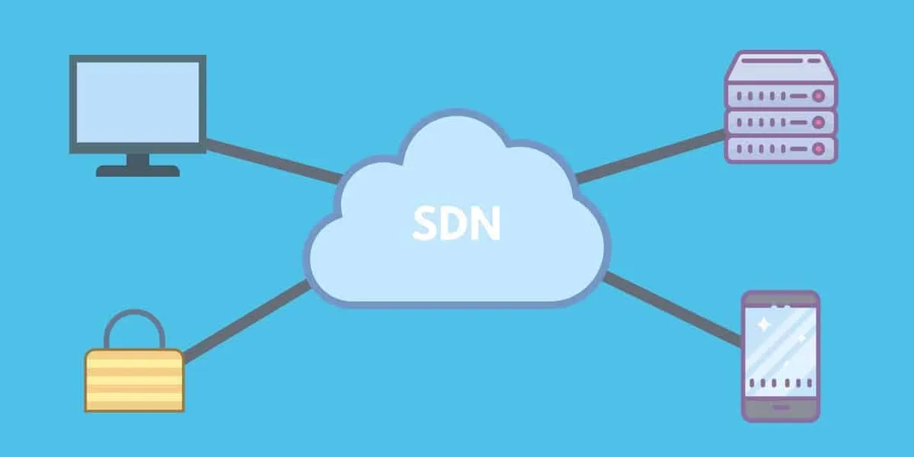

como um software SDN funciona na prática:
O controlador SDN pode ser programado para implementar políticas específicas de acordo com as necessidades da rede, como priorizar o tráfego de dados ou limitar o acesso de dispositivos específicos. Com o SDN, é possível gerenciar a rede de forma centralizada e programática, o que aumenta a flexibilidade, a segurança e a eficiência da rede. Além disso, o SDN permite uma fácil integração com outras tecnologias de rede, como a virtualização de rede, para criar soluções ainda mais poderosas.
